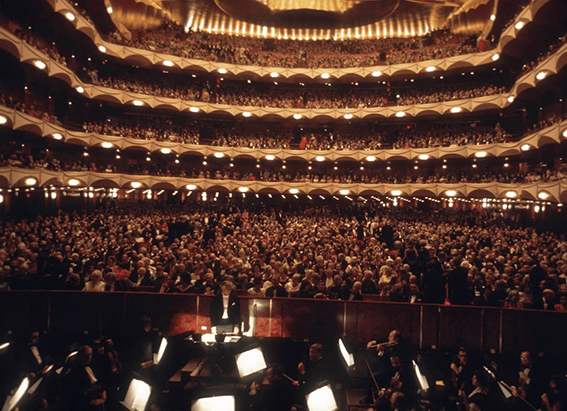
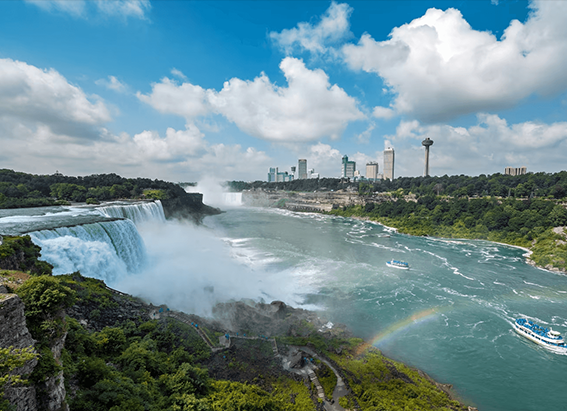
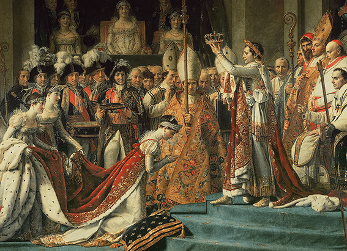

NATIONAL GEOGRAPHIC
These frescoes shattered conventions in the Italian art world
TRAVEL
When visitors look up at the ceiling of the Scrovegni Chapel in Padua, Italy, they often suddenly fall silent. Painted above are the golden stars and the enchanting blue skies of a heaven envisioned by the Renaissance artist Giotto di Bondone. But an equally sublime story one central to the Christmas season can be found when they turn to the frescoed walls.
Unveiled in 1305, the still vivid panels chronicle the lives of Mary and Jesus, in a style that revolutionized the Western art world. “Giotto’s Scrovegni Chapel is a pillar, the beginning of the Renaissance,” says tour guide and art historian Cecilia Martini. “And you have to see it to really appreciate what was painted 200 years later: Michelangelo’s Sistine Chapel. That marked the climax of the Renaissance. The two are milestones.”
But while Rome’s Sistine Chapel, with all its dynamic drama, gets seven million visitors a year, Padua’s Scrovegni Chapel, with its powerful simplicity, has only recently begun to surface on travelers’ itineraries. Only half an hour’s train ride from over-touristed Venice, Padua’s historic center showcases Giotto’s influence. In the 14th century, his frescoes were such a sensation that artists flocked to Padua to follow in the footsteps of the master, painting churches and secular buildings, and earning the town its nickname: Urbs Picta, Painted City.
In July, UNESCO added Padua’s 14th century fresco cycles to its World Heritage list. The proclamation recognized eight frescoed buildings in the historic center, including the Scrovegni Chapel, which collectively “gave birth to a new image of the city.”
A wealthy family’s chapel
Among the most popular of the UNESCO-designated frescoed buildings is the Basilica of Saint Anthony of Padua, a pilgrimage site since its founding in the 13th century. This was Giotto’s first commission in Padua. He was working there when a wealthy banker, Enrico Scrovegni, hired the artist to paint his family’s chapel.
Many believe Enrico hired the most famous painter of the day to repair his family’s reputation. Reginaldo, Enrico’s father, had been a notorious loan shark, so despised by the church he was refused a Catholic burial. Dante put Reginaldo in the Inferno’s Seventh Circle of Hell, doomed to sit on hot sand, swatting at flames for eternity.
Renaissance masterpiece
But for Giotto, the Scrovegni Chapel goes down in history as his greatest triumph. Some of its success is certainly thanks to the fact that he had Enrico’s lavish funding to carry out such stunning coups as the extravagant use of the color blue, which casts a mystical atmosphere over the entire space.
According to art historian Susan Steer, “blue was the most precious and most expensive pigment at that time.” The color came from lapis lazuli, costlier than gold, arriving by ship from what is now Afghanistan to Venice, where it was carefully transported to artists in Florence, Milan, and Padua. Around this time, the tradition of depicting the Blessed Virgin Mary in blue, symbolizing her precious divinity, was established.
Along with the mesmerizing colors, Giotto’s mastery of humble details adds charm to the panels, as he blends the everyday with the Divine. There is laundry flapping in the breeze in his “Annunciation,” where the angel Gabriel appears to Mary to tell her she is to give birth to the Savior. In the “Marriage of Cana,” while Jesus performs his miracle of turning water to wine, a potbellied master of ceremonies drinks up. Astronomists for centuries studied Giotto’s panel of the Epiphany, with kings bringing gifts to Christ’s manger, because above them he painted Halley’s Comet, which he had seen a few years before the chapel was completed.
Giotto’s innovations can be seen in each character’s eyes, such as the scene of the Nativity, as Mary hovers tenderly over her newborn son. In every panel, vibrant colors, realistic characters, and powerful emotions smashed the static, formal style of the Middle Ages, making way for a new era.
There’s a quiet, unified power to the cycle until the jolt of “The Last Judgment,” which covers the back wall, complete with twisted tortured figures and a gruesome horned Lucifer gobbling up a human.
Comparing Giotto’s “Last Judgment” with Michelangelo’s version in the Sistine Chapel is a way to see clearly how Renaissance painting evolved over the centuries. Although it is unknown whether Michelangelo ever visited the Scrovegni Chapel, he most certainly was influenced by Giotto, as all Renaissance artists were, says Martini. During his early artistic studies, he copied Giotto’s work in Florence and made it a point to save the drawings he made.
Around Padua
As dazzling as Padua’s interiors are, the loveliness of the town’s piazzas entices travelers to wander in the pedestrian-only historic center. Padua’s university, thriving since 1222, attracts a large international student population, and many occupy outdoor tables, drinking spritzes. There are markets overflowing with vintage clothes, antiques, and handicrafts, backed by pretty arcades. Typically an accordionist will be playing “O Sole Mio.”
A beloved destination for a drink is the elegant Pedrocchi Caffè, a Padua institution since 1831. Here, their signature coffee, accented with mint cream, can be enjoyed while seated on a velvet banquette. It’s a perfect spot to settle in and reflect on the rich images of the Painted City—its enchanting colors, powerful images, and golden stars.
Comments :
- john Very good
- john Very good
Leave a Reply
Your email address will not be published. Required fields are marked*
Related posts:
-
What was Leonard Bernstein and JFK's friendship really like
Leonard Bernstein and John F. Kennedy: One was a maestro, the other a president, and both were titans of 20th-century America. They were also unexpected friends whose relationship represented the union of American arts
View article -
In 1969, the U.S. turned off Niagara Falls. Here’s what happened next.
In the summer of 1969, America brandished its mastery over nature, landing a man on the Moon. Closer to home and perhaps to Americans’ hearts it shut off Niagara Falls.
View article -
The truth behind the turbulent love story of Napoleon and Joséphine
Revered in equal parts as hero or villain, Emperor Napoleon I led France from the rubble of the Revolution to peace and political stability. At the same time, he undertook a military expansion that at its height saw him control
View article